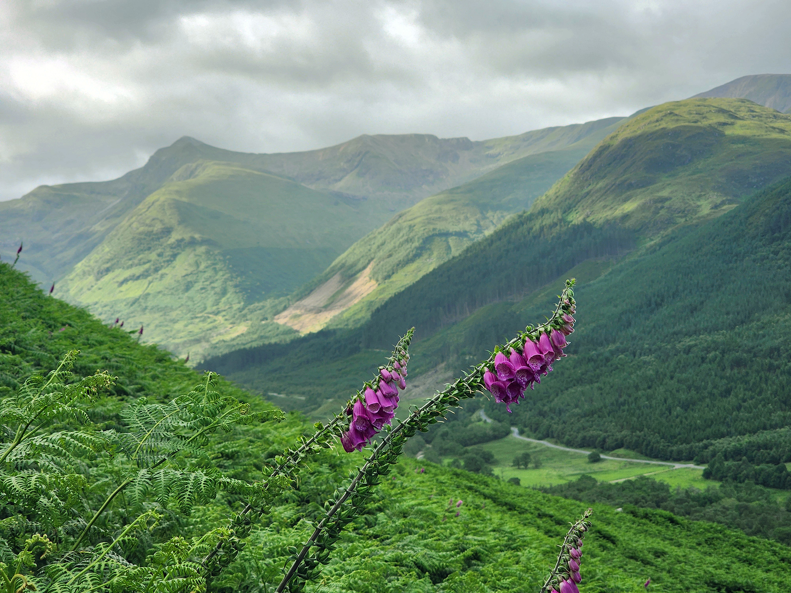

Bild 1: Bergslandskapet


I den här bilden använde jag Auto Tone
för att förbättra ljuset och färgerna.
Bergen blev tydligare, himlen blev mer naturlig i färgen
och blommorna liksom poppar i förgrunden.